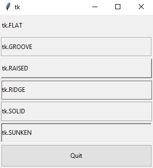
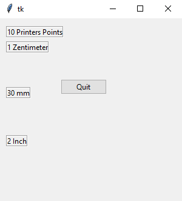
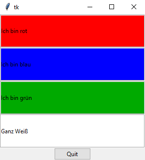
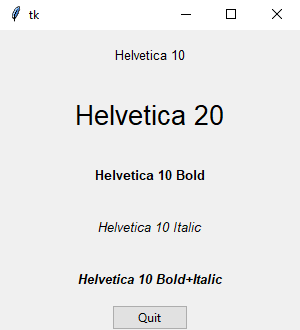

Optionen
Setzen und Abfragen von Optionen
Alle Widgets werden über Optionen konfiguriert. ttk- und tk-Widgets haben teilweise unterschiedliche Optionen.
Die folgenden Schreibweisen zum Setzen der Option text sind gleichwertig:
button = ttk.Button(parent, text='Klick mich bitte!')
button["text"] = 'Klick mich bitte!'
button.configure(text='Klick mich bitte!')Man erhält mit button.cget('text') den aktuellen
Wert der Option text des Widgets button.
Allgemeine Optionen
| Optionsname | Beschreibung |
|---|---|
| class_ | Widgetklasse, dient beispielsweise als Gruppenname für gemeinsame Befehle. |
| command | Einige Widgets, wie etwa ttk.Button, können Ereignisse auslösen. In diesem Fall wird ein Callback aufgerufen, dessen Namen man mit dieser Option setzen kann. Callbacks von Widgets haben keine Parameter |
| cursor | Festlegen eines Mauszeigers |
| takefocus | 0 oder 1, legt fest, ob das Widget den Fokus akzeptiert. |
| state | Kompatibilitätsoption für tk-Widgets, siehe auch Beschreibung für Zustände |
| style | einen Style auf dieses Widget anwenden, nur für ttk-Widgets |
| placeholder | Für Entries, es wird ein Text als Platzhalter eingefügt (Ab tk 8.7 für ttk-Widgets unterstützt) |
| placeholderforeground | Vordergrundfarbe des Platzhalters (Ab tk 8.7 für ttk-Widgets unterstützt) |
Labeloptionen
Dieses gilt für ttk.Button und ttk.Label gleichermaßen
| Optionsname | Beschreibung |
|---|---|
| compound | Hat man gleichzeitig ein Bild und einen Text in einem Widget anzuzeigen,
legt compound die relative Lage der zwei Elemente fest:
compound muss man angeben, wenn Bild und Text vorkommen. |
| font | Angabe eines Fonts |
| foreground | Vordergrundfarbe |
| image | Angabe eines Bildes |
| justify | Mehrzeiligen Text ausrichten: tk.LEFT, tk.CENTER, tk.RIGHT |
| padding | zusätzlicher innerer Abstand zum Text oder Bild |
| text | Der Text eines Labels oder Buttons. textvariable
hat Vorrang vor text |
| textvariable | Der Inhalt der Variablen gibt den Inhalt des Widgets an |
| underline | Gibt den Index desjenigen Buchstaben an, der unterstrichen werden soll |
| width | Legt feste Breite fest |
| wraplength | Maximale Zeilenlänge in Pixel oder einer anderen Einheit, ab der umgebrochen wird. Werte kleiner gleich 0 bedeuten keinen Umbruch. |
Das folgende Programm zeigt die Auswirkung der Option padding:
import tkinter as tk
from tkinter import ttk
class A(tk.Tk):
def __init__(self):
super().__init__()
self.geometry('200x200')
self._createWidgets()
def _createWidgets(self):
label1= ttk.Label(text='Label1', relief=tk.SUNKEN, padding=0)
label1.pack(expand=tk.YES, fill=tk.BOTH)
label2= ttk.Label(text='Label2', relief=tk.SUNKEN, padding=10)
label2.pack(expand=tk.YES, fill=tk.BOTH)
label3= ttk.Label(text='Label3', relief=tk.SUNKEN, padding=50)
label3.pack(expand=tk.YES, fill=tk.BOTH)
if __name__ == '__main__':
window = A()
window.mainloop()Scrolloptionen
Optionen für das Zusammenspiel mit Scrollbars
| Optionsname | Beschreibung |
|---|---|
| xscrollcommand | xscrollcommand
eines Widgets wird mit der s.set(…)-Methode
einer Scrollbar (horizontal) verknüpft |
| yscrollcommand | yscrollcommand
eines Widgets wird mit der s.set(…)-Methode
einer Scrollbar (vertikal) verknüpft |
Folgendes reduzierte Beispiel zeigt, wie es funktioniert:
listbox= tk.Listbox(…)
scrollX = ttk.Scrollbar(parent, orient=tk.HORIZONTAL, command=listbox.xview)
scrollY = ttk.Scrollbar(parent, orient=tk.VERTICAL, command=listbox.yview)
listbox['xscrollcommand'] = scrollX.set
listbox['yscrollcommand'] = scrollY.setRahmenoptionen
| Optionsname | Beschreibung |
|---|---|
| borderwidth | Breite des Randes, für relief benötigt |
| relief | Rahmenart, borderwidth
muss ebenfalls gesetzt werden:
tk.FLAT, tk.GROOVE, tk.RAISED,
tk.RIDGE, tk.SOLID und tk.SUNKEN |
Beispiel:
import tkinter as tk
from tkinter import ttk
class A(tk.Tk):
def __init__(self):
super().__init__()
self.geometry("300x300")
self._createWidgets()
def _createWidgets(self):
label1 = ttk.Label(self, relief=tk.FLAT, text="tk.FLAT");
label1.pack(expand=tk.YES, fill=tk.BOTH, padx=2, pady=2)
label2 = ttk.Label(self, relief=tk.GROOVE, text="tk.GROOVE");
label2.pack(expand=tk.YES, fill=tk.BOTH, padx=2, pady=2)
label3 = ttk.Label(self, relief=tk.RAISED, text="tk.RAISED");
label3.pack(expand=tk.YES, fill=tk.BOTH, padx=2, pady=2)
label4 = ttk.Label(self, relief=tk.RIDGE, text="tk.RIDGE");
label4.pack(expand=tk.YES, fill=tk.BOTH, padx=2, pady=2)
label5 = ttk.Label(self, relief=tk.SOLID, text="tk.SOLID");
label5.pack(expand=tk.YES, fill=tk.BOTH, padx=2, pady=2)
label6 = ttk.Label(self, relief=tk.SUNKEN, text="tk.SUNKEN");
label6.pack(expand=tk.YES, fill=tk.BOTH, padx=2, pady=2)
button = ttk.Button(self, text='Quit', command=self.destroy)
button.pack(expand=tk.YES, fill=tk.BOTH, padx=2, pady=2)
if __name__ == '__main__':
window = A()
window.mainloop()Highlightoptionen (nur tk-Widgets)
tk Widgets haben einen Highlightrahmen. Diesen Rahmen kann man farblich markieren.
Der Rahmen kann seine Farbe ändern, wenn das Widget den Input-Fokus erhält, also
beispielsweise wenn die Option takefocus zusätzlich gesetzt wurde.
| Optionsname | Beschreibung |
|---|---|
| highlightbackground | Hintergrundarbe des Highlight-Rahmens, wenn das Widget keinen Input-Fokus hat |
| highlightcolor | Hintergrundarbe des Highlight-Rahmens, wenn das Widget Input-Fokus hat |
| highlightthickness | Breite des Highlightrahmens |
Um die Färbung im folgenden Beispiel zu sehen, kann man per TAB-Taste zwischen den Widgets
wechseln:
import tkinter as tk
class A(tk.Tk):
def __init__(self):
super().__init__()
self.geometry('600x500')
self._createWidgets()
def _createWidgets(self):
self.grid_columnconfigure(0, weight=1)
self.grid_rowconfigure(0, weight=2)
self.grid_rowconfigure(1, weight=2)
self.grid_rowconfigure(2, weight=1)
msg1 = tk.Message(self,
background='black',
fg='white',
highlightbackground='green',
highlightcolor='yellow',
highlightthickness=5,
takefocus=tk.YES)
msg1['text']='Beispieltext\n#1'
msg1.grid(column=0, row=0, sticky=tk.W+tk.E+tk.N+tk.S)
msg2 = tk.Message(self,
background='black',
fg='white',
highlightbackground='green',
highlightcolor='yellow',
highlightthickness=5,
takefocus=tk.YES)
msg2['text']='Beispieltext\n#2'
msg2.grid(column=0, row=1, sticky=tk.W+tk.E+tk.N+tk.S)
if __name__ == '__main__':
window = A()
window.mainloop()Anker (anchor)
Anchor als Option hat verschiedene Bedeutungen in tkinter.
- In einem
ttk.Labeldient die Optionanchordazu, die Ausrichtung des Textes festzulegen, für zentriert beispielsweisetk.CENTER. - In einem
ttk.LabelFrameist die Optionlabelanchordazu da, das Label an sich zu positionieren. - Im Place-Layout dient
anchordazu, einen Ort im Widget zu festzulegen. Dieser Ort im Widget, beispielsweise die untere rechte Ecke (tk.SE), wird an einen Punkt positioniert.
Tkinter kennt Konstanten (Himmelsrichtungen) für den Anker: tk.NW, tk.N, tk.NE, tk.W, tk.CENTER, tk.E, tk.SW, tk.S und tk.SE
Dimensionen
Dimensionsangaben
Numerische Angaben zu Optionen können sowohl in Pixel wie auch in anderen Einheiten angegeben werden:
x=10-- meint 10 Pixel,x='10c'-- meint 10 Zentimeter,x='20i'-- meint 20 Zoll,x='30m'-- meint 20 Millimeter,x='10p'-- meint 10 Printer Points (1/72 Zoll).
Beispiel:
import tkinter as tk
from tkinter import ttk
class A(tk.Tk):
def __init__(self):
super().__init__()
self.geometry("300x300")
self._createWidgets()
def _createWidgets(self):
self.label1 = ttk.Label(self, relief=tk.GROOVE, text="1 Zentimeter");
self.label1.place(x=10, y='1c')
self.label2 = ttk.Label(self, relief=tk.GROOVE, text="2 Inch");
self.label2.place(x=10, y='2i')
self.label3 = ttk.Label(self, relief=tk.GROOVE, text="30 mm");
self.label3.place(x=10, y='30m')
self.label4 = ttk.Label(self, relief=tk.GROOVE, text="10 Printers Points");
self.label4.place(x=10, y='10p')
self.quit = ttk.Button(self, text='Quit', command=self.destroy)
self.quit.place(x=100,y=100)
if __name__ == '__main__':
window = A()
window.mainloop()Farben
Farbangaben
Farben können auf verschiedene Weisen notiert werden:
- als Farbname wie 'red', 'green', 'blue', …,
- als 12-Bit-Farbe: '#RgB',
- als 24-Bit-Farbe: '#RRggBB',
- als 36-Bit-Farbe: '#RRRgggBBB'.
Beispiel:
import tkinter as tk
from tkinter import ttk
class A(tk.Tk):
def __init__(self):
super().__init__()
self.geometry("300x300")
self._createWidgets()
def _createWidgets(self):
label1 = ttk.Label(self, relief=tk.GROOVE, text="Ich bin rot", background='red');
label1.pack(fill=tk.BOTH, expand=tk.YES)
label2 = ttk.Label(self, relief=tk.GROOVE, text="Ich bin blau", background='#00F');
label2.pack(fill=tk.BOTH, expand=tk.YES)
label3 = ttk.Label(self, relief=tk.GROOVE, text="Ich bin grün", background='#00aa00');
label3.pack(fill=tk.BOTH, expand=tk.YES)
label4 = ttk.Label(self, relief=tk.GROOVE, text="Ganz Weiß", background='#fffffffff');
label4.pack(fill=tk.BOTH, expand=tk.YES)
button = ttk.Button(self, text='Quit', command=self.destroy)
button.pack()
if __name__ == '__main__':
window = A()
window.mainloop()Font
Font als Tupel
Ein Font kann beschrieben werden als ein Tupel aus Familie, Größe und Optionen. Beispiele sind
('Helvetica', 10, 'bold') und
('Courier', 20, font.BOLD, font.ITALIC).
Beispiel:
import tkinter as tk
import tkinter.font as font
from tkinter import ttk
class A(tk.Tk):
def __init__(self):
super().__init__()
self.geometry("300x300")
self._createWidgets()
def _createWidgets(self):
label1 = ttk.Label(self, anchor=tk.CENTER, text="Helvetica 10",
font=('Helvetica', 10));
label1.pack(fill=tk.BOTH, expand=tk.YES)
label2 = ttk.Label(self, anchor=tk.CENTER, text="Helvetica 20",
font=('Helvetica', 20));
label2.pack(fill=tk.BOTH, expand=tk.YES)
label3 = ttk.Label(self, anchor=tk.CENTER, text="Helvetica 10 Bold",
font=('Helvetica', 10, font.BOLD));
label3.pack(fill=tk.BOTH, expand=tk.YES)
label4 = ttk.Label(self, anchor=tk.CENTER, text="Helvetica 10 Italic",
font=('Helvetica', 10, font.ITALIC));
label4.pack(fill=tk.BOTH, expand=tk.YES)
label5 = ttk.Label(self, anchor=tk.CENTER, text="Helvetica 10 Bold+Italic",
font=('Helvetica', 10, font.BOLD, font.ITALIC));
label5.pack(fill=tk.BOTH, expand=tk.YES)
button = ttk.Button(self, text='Quit', command=self.destroy)
button.pack()
if __name__ == '__main__':
window = A()
window.mainloop()
Fontobjekt
Ein Fontobjekt lässt sich mit
font.Font(root=None, font=None, name=None, exists=False, **options)
erzeugen. Die Parameter bedeuten:
- font: ist dabei ein Fonttupel in der Form:
(family, size, options)wie oben, - name: ein eindeutiger Name. Einige Fonts sind vorbenannt, mit
font.names()erhält man ein Tupel dieser Namen. - options: Optionen aus der folgenden Tabelle.
| Optionsname | Beschreibung |
|---|---|
| family | Fontfamilie, mögliche Werte:
'Bahnschrift Light', 'Courier', 'Times New Roman'…
Mit font.families() erhält man eine Tupel
von dem System bekannten Fontfamilien |
| overstrike | Durchsteichen, mögliche Werte: 0 oder 1 |
| size | Größe des Fonts. Positive Werte werden in „Punkten“ gemessen, bei negativen Werten wird der Absolutbetrag in Pixeln gemessen |
| slant | Kursivschrift, font.ITALIC,
font.ROMAN |
| weight | Fontgewicht, mögliche Werte:
font.NORMAL, font.BOLD |
| underline | Unterstreichen, mögliche Werte: 0 oder 1 |
Beispiel:
import tkinter as tk
import tkinter.font as font
from tkinter import ttk
class A(tk.Tk):
def __init__(self):
super().__init__()
self.geometry("300x200")
self._createWidgets()
def _createWidgets(self):
f = font.Font(family='Courier', size=50)
label1 = ttk.Label(self, anchor=tk.CENTER, text="Courier 20", font=f);
label1.pack(fill=tk.BOTH, expand=tk.YES)
button = ttk.Button(self, text='Quit', command=self.destroy)
button.pack()
if __name__ == '__main__':
window = A()
window.mainloop()Für einen gegebenen Font f gibt es die folgenden Methoden:
| Fontmethoden | Beschreibung |
|---|---|
f.actual(option=None, displayof=None) | Fontattribute werden zurückgegeben. Dictionary mit den Schlüsseln: 'family', 'size', 'weight', 'slant', 'underline' und 'overstrike' |
f.cget(option) | Ein bestimmtes Attribut wird zurückgegeben |
f.config(**options) | Optionen werden konfiguriert |
f.copy() | Eine Kopie des Fonts (neues Objekt) wird zurückgegeben |
f.measure(text, displayof=None) | Vermisst einen Text mit dem Font |
f.metrics(*options, **kw) | ascent: Höhe des Fonts von Basislinie bis zum höchsten Punkt des Fonts, descent: Höhe Basislinie bis zum tiefsten Punkt des Fonts, linespace: minimaler Zeilenabstand, damit Zeilen nicht überlappen, fixed: 1 oder 0 |
Weitere Fontmethoden
Das Fontmodul kennt die Funktionen:
| Fontfunktion | Beschreibung |
|---|---|
font.families(root=None, displayof=None) | Tupel aller bekannten Fontfamilien |
font.names(root=None) | Liste von bekannten Fontnamen |
font.nametofont(name, root=None) | Gibt einen Font() zurück auf der Basis eines Fontnamen |
Kontrollvariablen
Kontrollvariablen
Für die Kommunikation mit manchen Widgets werden Kontrollvariablen eingesetzt. Mit denen kann beispielsweise der Text eines Labels an anderer Stelle geändert werden.
Es gibt folgende Kontrollvariablen, die mit dem optionalen Parameter value
vorbelegt werden können:
tk.BooleanVar(value=True)tk.DoubleVar(value=7.0)tk.IntVar(value=3)tk.StringVar(value='Hallo, Welt!')
Zu diesen Kontrollvariablen gehören die Methoden var.get()
sowie var.set(value)
Gebrauch:
- Button, Entry, Label, Menubutton: Option
textvariable, - Radiobutton: Option
variable, mehrere Radiobuttons teilen sich eine Variable und bilden dadurch eine Buttongroup, - Scale: Option
variable, die den Wert enthält, - Checkbutton: Option
variable - LabeledScale: Option
variable
Manche Widgets, wie Checkbutton, haben noch die Optionen onvalue
und offvalue, um diese angegebenen Werte in der
Variablen zu speichern: Einen Wert, der der Kontrollvariable als on- oder off-Wert übergeben wird.
import tkinter as tk
import tkinter.font as font
from tkinter import ttk
class A(tk.Tk):
def __init__(self):
super().__init__()
self.geometry("300x200")
self._createWidgets()
def _createWidgets(self):
self._textVar = tk.StringVar(value='Drück mich bitte.')
button1 = ttk.Button(self, textvariable=self._textVar, command=self._onPress)
button1.pack(fill=tk.X, expand=tk.YES)
button = ttk.Button(self, text='Quit', command=self.destroy)
button.pack()
def _onPress(self):
self._textVar.set('Danke!')
if __name__ == '__main__':
window = A()
window.mainloop()Zustände
Zustand - state
Ein Widget kann in einem von vielen Zuständen sein. Für ttk-Widget sind diese Zustände:
active: Maus schwebt über einem Widget, wie einem Button, zumeist ändert das Widget daraufhin seine Farbe,disabled: Widget ist deaktiviert und keine Interaktion ist mit diesem Widget möglich,focus: Widget hat Keyboard-Fokus, drückt man Tasten landen sie im Widget,pressed: das Widget wird gerade gedrückt, zumeist ändert sich dann seine Farbe,selected: das Widget ist "eingeschaltet" oder "ausgewählt". Radiobuttons oder Checkbuttons kennen diesen Zustand,background: das Widgets ist in einem "Hintergrundfenster". Dieser Zustand wird nur von einigen Betriebssystemen unterstützt,readonly: das Widget ist grundsätzlich nicht beschreibbar, etwa eine Eingabezeile, aus der man nur Text mit ins Clipboard kopieren kannalternate: etwa der dritte Zustand bei Checkbuttons, bevor er selektiert/deselektiert wurde,invalid: beispielsweise ungültiger Wert in einem Entry nach Validierung,hover: ähnlich wieactive, zumeist bei Themes benutzt
Die Zustände werden mit Methoden wie instate(…) oder
state(…) abgefragt / verändert.
Tk-Widgets kennen nur die States disabled, normal und
readonly. Diese gibt man üblicherweise als Option
state an und ändert sie mit w.configure(…)